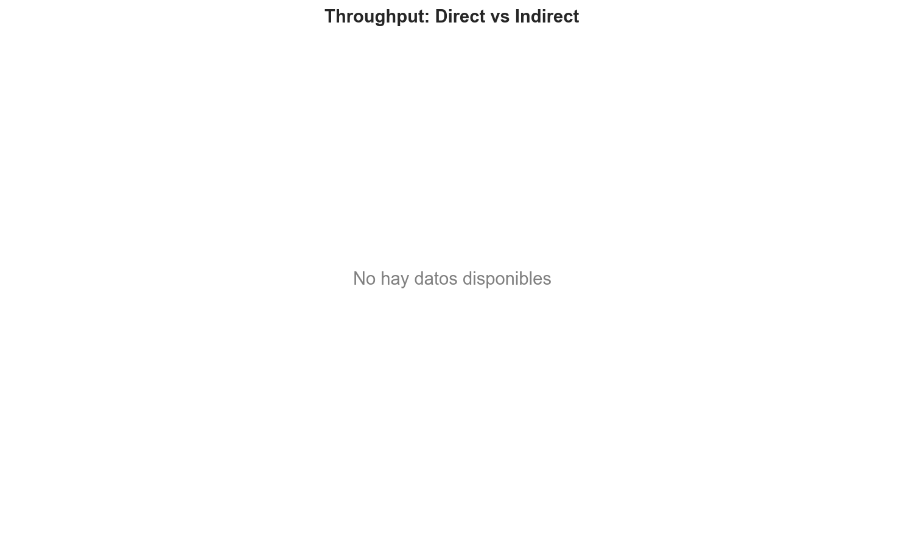
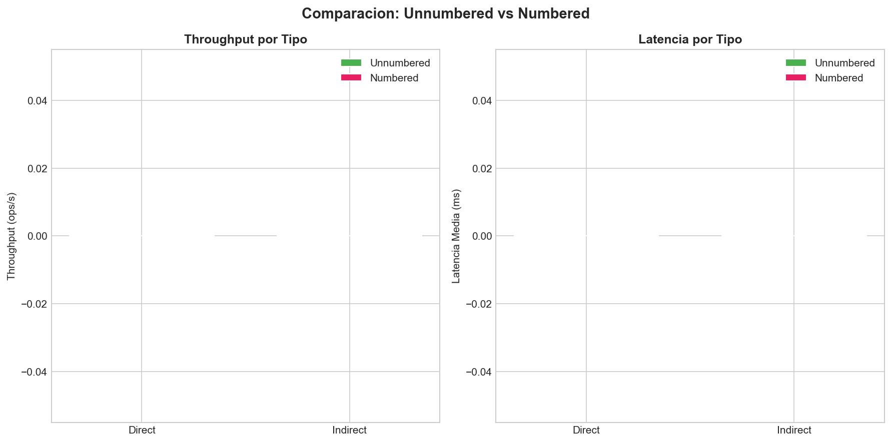

| Benchmark | Throughput | Latency Mean | P50 | P95 | P99 | Accepted | Rejected |
|---|
| Benchmark | Throughput | Latency Mean | P50 | P95 | P99 | Accepted | Rejected |
|---|
| Benchmark | Direct Throughput | Indirect Throughput | Ratio | Direct Latency | Indirect Latency |
|---|


1. Both architectures show comparable performance.
2. Choose based on non-functional requirements (fault tolerance, simplicity).
3. Scale workers based on expected load using the scalability analysis.
4. Monitor contention patterns in production to detect hotspot scenarios.